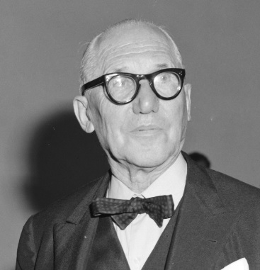
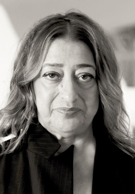
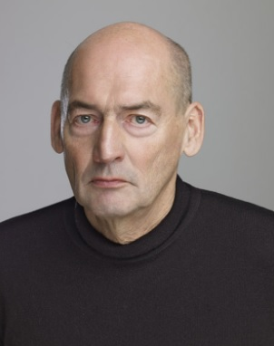

Arquitecto Lecorbusier

Charles-Édouard Jeanneret- Gris, más conocido a partir de la década de 1920 como Le Corbusier, fue un arquitecto y teórico de la arquitectura, urbanista, pintor, escultor y hombre de letras suizo nacionalizado francés en 1930.
Zaha Hadid

Zaha Hadid fue una arquitecta anglo-iraquí, procedente de la corriente del deconstructivismo. Pasó la mayor parte de su vida en Londres, donde realizó sus estudios de arquitectura.
Arquitecto Reem Koolhass

Remment Lucas "Rem" Koolhaas, conocido como Rem Koolhaas, es un arquitecto holandés, teórico de la arquitectura, urbanista y profesor en Práctica de Arquitectura y Diseño Urbano en la Graduate School of Design de la Universidad de Harvard.